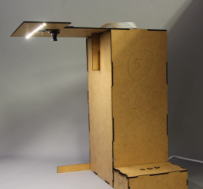

Vorlesegerät
A reading device for the visually impaired

Vorlesergerät
Commercial reading devices for the elderly or visually impaired cost thousands of dollars. To help address this problem at the Health Hackademy from be-able, Vorlesegerät was made.
How it works
- A user places a document below the camera and presses the center button
- The Vorlesegerät captures an image and extracts text from it
- The extracted text is converted into speech using Pico Text-to-Speech
- The audio file is played and can be controlled by the arrows
- Pressing the center button twice takes the user to the device memory, where arrows serve to navigate through extracted text files and the center button to reproduce them as audio.
How it works
Kindly accompanied by Rose Marie the prototype was tested and improved based on her feedback.

The device is able to take a picture and extract the text without requiring an internet connection using Tesseract, an open source OCR technology. With the current hardware, a Raspberry-pi 3b+ it takes about 30 seconds to process a single page. To solve this problem, a much faster internet based OCR solution was implemented using Google Vision API.
The Tools
Optical Character Recognition
Text extracted from the images using:
Text to Speech
Text converted into an audio file using:
Hardware
Overall Cost
200 euro
Way more affordable than other commercially available reading devices
Check these websites for more information about the project: